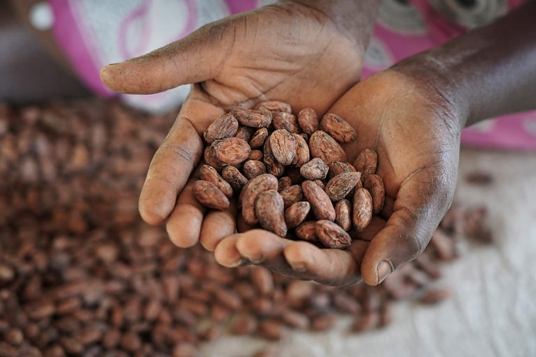

Not all stores stock every product so if you’re looking for something specific it’s a good idea to call the shop before you head there. If you know a store that you’d like us to be in please drop us an email: info@honestchocolate.co.za
Honest Café, 64A Wale Street, Cape Town City Centre
Contact Number: 076 765 8306
Mail: cafe@honestchocolate.co.za
Opening Hours: Sunday 09:00 – 16:00; Monday – Friday 10:00 – 18:00; Saturday 09:00 – 17:00
7 Barron Street, Woodstock, Cape Town
Open Monday-Friday: 08h00-15h00
All our cacao beans are single origin and ethically sourced through direct trade with Kokoa Kamili in the Kilombero Valley of Tanzania. Here the highest quality certified organic cacao beans are grown by farmers big and small. Find out how cacao is grown and harvested by clicking through the slides:
Cacao only grows 20 degrees on either side of the Equator, so cacao doesn’t actually grow in South Africa. We’re happy that by sourcing from Tanzania we are least keeping our footprint within the continent.
Cacao refers to the raw and minimally processed beans, powder or paste, whereas cocoa refers to products made from heating the cacao bean to a certain temperature during roasting.
Cacao farmers and their greater community have for a long time been exploited and unethically treated. Ethically sourced cacao refers to a trading partnership between the farmers, buyers and chocolate makers that is based on transparency, mutual respect and equal rights for both parties. That is why we have taken years to find trusted partners in sourcing the cacao from farmers that are well treated and given their fair share.
We source the best quality cacao from a remote Tanzanian valley where farmers are then paid their fair share. We try keep our ingredients organic wherever possible. All our chocolate is also handmade to increase job creation and skill development. All these add costs to the overall making of the chocolate.
While most chocolate is made with machines these days, our chocolate is all made by hand. Hand tempering means heating the ground chocolate to a temperature of 45 degrees Celsius, then cooling it down to 28 degrees Celsius by working it on a granite slab and then reheating it to a temperature of 32 degrees Celsius. This tempering process ensures a snap in the chocolate as you break it, and a smooth and even texture when it melts in your mouth.